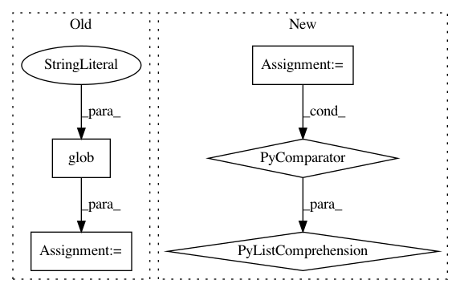

31b46cdcecafb277ac9946fee97a68d82772b890,scipy/sparse/setup.py,,configuration,#Any#Any#,9
Before Change
os.path.join("sparsetools", "csr_impl.h"),
os.path.join("sparsetools", "other_impl.h"),
]
depends += glob.glob("sparsetools/*.h")
config.add_extension("sparsetools",
define_macros=[("__STDC_FORMAT_MACROS", 1)],
depends=depends,
include_dirs=["sparsetools"],
After Change
"--no-force"])
return []
depends = ["sparsetools_impl.h",
"bsr_impl.h",
"csc_impl.h",
"csr_impl.h",
"other_impl.h",
"bool_ops.h",
"bsr.h",
"complex_ops.h",
"coo.h",
"csc.h",
"csgraph.h",
"csr.h",
"dense.h",
"dia.h",
"py3k.h",
"sparsetools.h",
"util.h"]
depends = [os.path.join("sparsetools", hdr) for hdr in depends],
config.add_extension("sparsetools",
define_macros=[("__STDC_FORMAT_MACROS", 1)],
depends=depends,
In pattern: SUPERPATTERN
Frequency: 3
Non-data size: 5
Instances
Project Name: scipy/scipy
Commit Name: 31b46cdcecafb277ac9946fee97a68d82772b890
Time: 2014-03-12
Author: pav@iki.fi
File Name: scipy/sparse/setup.py
Class Name:
Method Name: configuration
Project Name: rwth-i6/returnn-experiments
Commit Name: 7247571ab448f9ccf6b392a26df0b8b40b1085eb
Time: 2018-05-16
Author: zeyer@i6.informatik.rwth-aachen.de
File Name: 2018-asr-attention/librispeech/full-setup-attention/tools/collect-train-text.py
Class Name:
Method Name:
Project Name: mseitzer/pytorch-fid
Commit Name: 2313fbdad72507c0af7daaf43d1887fc95453762
Time: 2020-11-30
Author: 16725193+mseitzer@users.noreply.github.com
File Name: src/pytorch_fid/fid_score.py
Class Name:
Method Name: _compute_statistics_of_path